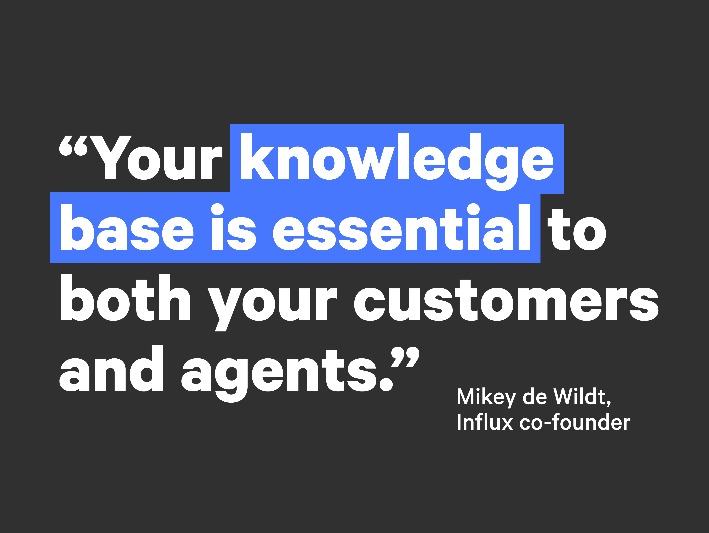
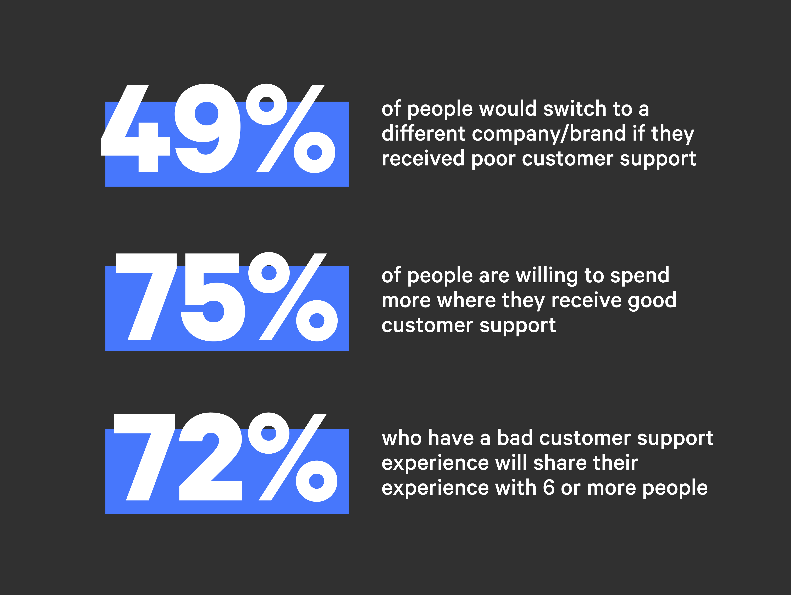

No matter how well developed your product is, it’s likely that at some point along your customer’s journey, they’re going to have questions. When they do, it’s beneficial for many reasons that they’re met by an empathetic and efficient customer support team. Knowing what constitutes exceptional SaaS customer support and how to implement it can boost your business’s performance significantly.
What is SaaS customer support?
SaaS customer support provides help for your customers when they reach out with questions or need solutions.
Efficient customer support is critical to your SaaS business because it demonstrates to customers that you care about them. SaaS customer success means ensuring that your customers achieve their goals through your products, services, and interactions with your company.
Potential customers may also reach out when they are curious about your product and need information.
At Influx, we’re fluent in delivering SaaS customer support that ticks all the boxes. In this article, we share 8 best practices for SaaS customer support you need to know about and why it’s so important.
8 best practices for providing great SaaS customer support
Of course, having friendly and caring people on the other side of your customer phone calls, emails or DMs is essential. However, there are several other critical components to providing impactful customer support as part of your SaaS support strategy, which we explore below:
1. Emphasize documentation
An often overlooked, yet exceptionally beneficial SaaS customer support tool is a comprehensive knowledge base. Yes, it takes time to create. However, creating this documentation is likely to pay off significantly down the track, in more ways than one.
Believe it or not, your customers don’t actually want to call you for support. Their preference is to find the answer to their question seamlessly through a self-service feature, such as a FAQs page. When customers can find the information they’re looking for without speaking to you, it’s a win-win. They find what they need and the volume of your incoming support tickets is slashed so your customer support team can focus on any pressing issues. Having a documented knowledge base can also make onboarding new employees a far simpler feat.

2. Connect your SaaS support team and your product
Building a solid bridge between your SaaS support team and the rest of your company can reduce the risk of many future struggles. Your customer support team has the most direct contact with your customers. They are likely to know them best. Facilitating a relationship between your support personnel and the rest of your company can help you focus on your customers’ needs and pain points as your company develops.
You can achieve this through circulating support conversations and regular briefings between other departments. This can keep your SaaS customer support team updated on product updates, service interruptions, launches, and special offers. It can also keep your product teams informed about customer satisfaction.
3. Choose appropriate support channels
As with many things in life, it can be beneficial to do a few things with excellence than to deliver below-average performance in many things. In a nutshell, your customers are likely to prefer a quick and concise answer via any channel rather than a slow sub-par answer via their preferred channel. There’s no point in having a multitude of bilingual customer-facing channels, for example, in-app support, Zendesk, and Google Play Console, if you don’t have a dedicated customer support team to tend to them.
When choosing your SaaS customer support channels, it pays to ensure they provide you with the opportunity to deliver improved support and solutions.
4. Be accessible
Customer support is as vital to business retention and growth as the sun is for photosynthesis. A well-designed SaaS support strategy places the right communication channels for its customers. As such, you want to make your support features as accessible to your customers as possible. A contact form has little use hidden within the depths of your website, for example.
Allowing your customers to navigate their way to the support they need seamlessly can create a community of incredibly loyal customers. Logically placed ‘contact us’ buttons, live chat boxes and easy-to-spot search tabs are great for helping your customers access the help they need with ease.
5. Understand that speed is of the essence
A decade ago, a ‘Thanks for contacting us. We’ll respond to you within 1 business day.’ email would be tolerable. Fast forward to 2021 though, and customers have high expectations for response time. In fact, 75% of customers expect you to respond to them in less than 10 minutes. What do we want? Customer support! When do we want it? NOW!
With this in mind, if you haven’t already, it may be a great idea to consider implementing 24/7 live chat support. While it may feel like an added burden, especially to those accustomed to managing more traditional support channels like email, it can be well worth the adaptation. 41% of people opt for a live chat as a means of customer support. Why? Mostly because it’s fast!
6. Keep tabs on your progress
There are two parts to this. In order to keep tabs on your progress, your company needs to identify what progress looks like:
- How does your company define what excellent SaaS customer support is?
- How will your SaaS customer support make a difference in your customers’ lives and customer experience?
- What is your SaaS support strategy to help your customers achieve their goals?
- What does SaaS customer success look like to your client and your company?
These answers are critical for you to measure your support team’s performance and progress. You’re also in a position to then comprehend the impact of your SaaS customer support efforts on your company’s growth.
Some ways of measuring progress can be through monitoring ticket volume, average response times, and customer satisfaction with service levels. Another method can be by analyzing the number of free trial customers who become paid customers following a customer support experience.

7. Invite feedback often
When it comes to gauging your support performance, consider your customers as your most trusted advisors. Ensure you give them ample opportunity to give you feedback. And then take that feedback on board. A good way of collecting customer feedback is by including prompts for customers to rate their support experience once complete. You can do this via a link at the bottom of a support email, a check box at the end of a live chat, or a phone survey at the end of a support call.
Offering your customers the chance to have their say often can allow your company incredible insights on how to enhance both your SaaS customer support and product.
8. Engage a SaaS customer support operation
There are many business facets, each of which requires and deserves individual attention and intention. SaaS customer support is one of them. And not all people have the skills and attitude required to deliver outstanding support. Many consumers are easily swayed based on the research they conduct themselves, which is often in the form of online reviews. When you offer a high level of customer support that generates positive customer experiences and feedback, you’re in a prime position to retain existing customers and attract new ones.
When a business grows or goes through a seasonal spike, so does its need for customer support. As such, businesses fall into the trap of falling off the growth train upon suddenly having to use most of their resources for supporting all their new customers instead of focussing on continuing to grow the business. Expert customer support operations exist to execute bespoke customer support on your behalf. Hiring a professional support team to take care of your customers through their journey with your product is one of the best practices for SaaS customer support.
Why is support critical to SaaS customer success?
Customer support is the lifeblood of companies. And it’s a lot more than simply ‘answering queries’. So, why exactly is mastering your customer support so important?
- It’s one of the best ways to gauge how your customers truly feel about your business.
- Customer support often allows issues to surface in your inbox before anywhere else.
- It helps your business plan for the future based on deep insights.
- Your customer support is a reflection and extension of your brand.
- It can enhance your reputation and gain referral business.
- Customer support has the potential to drive retention more powerfully than your product.
The best customer support teams have a strong focus on knowing and understanding why they provide service to a customer. They adhere to a company culture of serving customers with an uncompromisingly high standard that thrives on trust and support extended across all touchpoints.
How do you keep SaaS customers engaged?
Many strategies have been proven to work in retaining your SaaS customers.
You can provide your customers with continuing education and learning to keep their experience with your product fresh and engaging through webinars and video tutorials.
Ensure that your communication with customers is regular, interesting, and beneficial to them. Personalize your emails to them through email marketing or create a customer loyalty program to reward them.
Critical components of a great SaaS support strategy
You may be asking, ‘what are the important components of a SaaS customer support strategy and how can I include them?’ Briefly, here are a few critical components to incorporate as soon as possible:
- Make your support easy to find
- Create a thorough FAQ with the purpose of helping your customers
- Fix the cause of problems when you can
- Keep your communication in one place as much as possible
Amazing SaaS customer support will see a reduction in response time while also skyrocketing your growth. We can prove it! Check out our case study showing how investing in the right team of SaaS customer support agents can flex and scale your business to unfathomable amounts.
Level up your SaaS customer support with Influx
As you can see, SaaS customer support is not only ‘something to consider’, it’s essential. At Influx, we have a common goal: to provide businesses like yours with the ultimate in customer support services, no matter the scope or location. We match your brand voice exactly and include all management and training so you can focus on what you do best, knowing your customer support is in exceptionally capable hands.
What’s more - getting started with us is easy. We can have you up and running with a full flexible support ops team in one week. The results speak for themselves. Contact us to see what we can do for you.